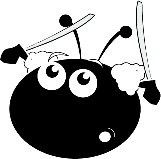

A new score.
Open an ABC file from the File menu, press O, or drop one here.
Pick the signature you want to see on the staff.
Click or drag to draw; hold Alt to erase. The dotted line is the staff line the symbol sits on.
Nothing drawn yet. Use Insert → Draw a symbol… first.
Choose what to print. Paper size, margins and “Save as PDF” are in your system’s print dialog, which opens next.

A musical score editor by Sébastien Tricaud.
Originally written in C and GTK+ between 2001 and 2005, the last release being 0.0.9 “harder, better, stronger, faster” in April 2005. Rewritten in Go in 2026, engraved with SMuFL and Bravura.
GPL v2 or later.